Создание нового подключения для удалённого доступа к Интернет
Детальная настройка свойств подключения удалённого доступа к Интернет
1.Запустите Панель управления: выберите команду «Панель управления» в меню «Пуск».
2.Откройте раздел «Телефон и модем»: на Панели управления дважды щёлкните мышью пункт «Телефон и модем» - система откроет панель «Телефон и модем»
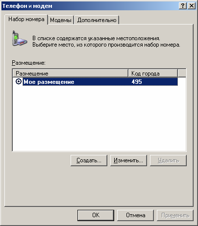
3.Откройте вкладку «Модемы» (для этого щелкните мышью по названию вкладки «Модемы»). Выберите тип модема – «модем MC35», затем нажмите «Свойства» для детальной настройки свойств модема.
Если в списке модем остутствует нажмите кнопку «Добавить».
3.1 Отметьте галочкой пункт: «Не определять тип модема (выбор из списка)».
3.2 Далее в столбце слева «Изготовитель» выберите строку «Siemens AG - Wireless Modules», в списке моделей выберете модем «MC35 (GPRS)»
3.3 Если же в сипске моделей отсутствует необходимая Вам модель, нажмиие кнопку «Установить с диска» и укажите путь к драйвер, обычно папка с драйвером находится по адресу: Мой компьютер > Локальный диск С:\ > Terra > MC35 (GPRS)
3.4 В следующем диалоговом окне отметьте пунк «Выбранные порты» и выберете тот COM порт, к которому подключен Ваш модем.
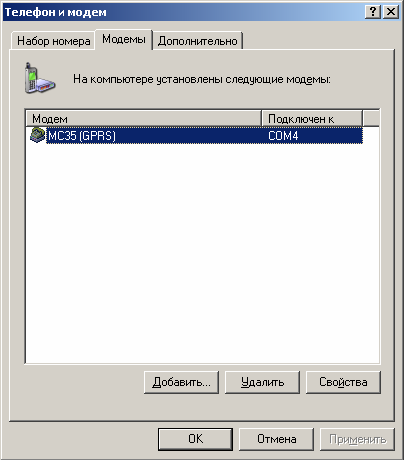
4.Система отобразит панель настройки свойств Вашего модема «Свойства МС35 (GPRS)». Откройте вкладку «Модем» (для этого щелкните мышью вкладку «Модем»)
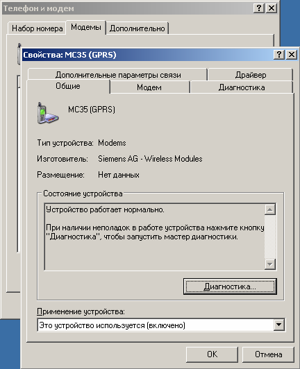
5.На вкладке «Модем» свойств MC35 щелкните мышью в выпадающий список «Скорость подключения» и выберите скорость порта для модема 57600:
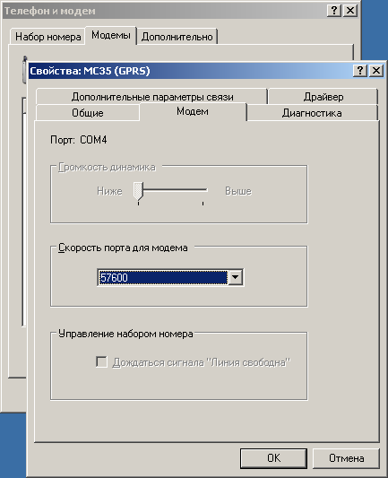
6.Откройте вкладку «Диагностика» и нажмите кнопку «Опросить модем»
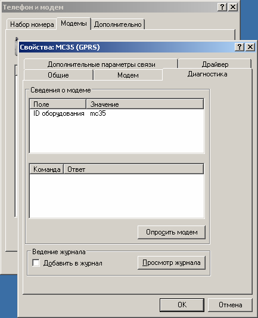
7.Опрос модема производится в течение нескольких секунд.
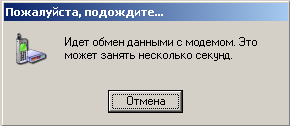
8.После завершения опроса выберите вкладку «Дополнительные параметры связи». Если при опросе модема у Вас появилась ошибка, проверьте правильность подключения и правильность настройки COM порта устройства.
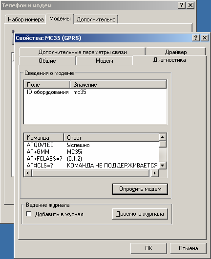
9.На вкладке «Дополнительные команды инициализации» укажите строку настроек Вашего оператора сотовой связи, через которого производится подключение к Интернет.
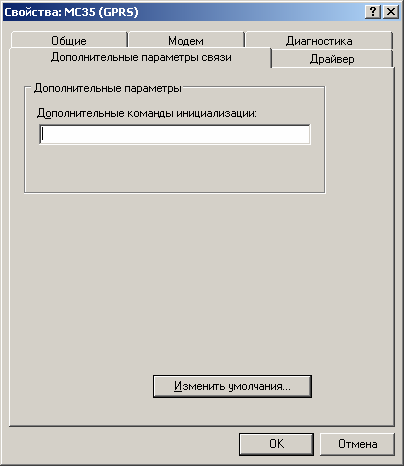
Внимание!
Вводить строку следует точно так, как она указана в рекомендациях провайдеров.
Некоторым модемам обязательно требуется вводить строку инициализации заглавными буквами.
В строке инициализации модема лишние пробелы недопустимы.
После настройки строки нажимаем кнопку «Изменить умолчания».
Для доступа к Интернету через GPRS в сети Beeline GSM дополнительная строка инициализации выглядит следующим образом:
AT+CGDCONT=1,"IP","internet.beeline.kz”
Для доступа к Интернету через GPRS в сети Tele2/Altel GSM дополнительная строка инициализации выглядит следующим образом:
AT+CGDCONT=1,"IP","internet”
Для доступа к Интернету через GPRS в сети Activ/Kcell GSM дополнительная строка инициализации выглядит следующим образом:
AT+CGDCONT=1,"IP","internet”
10.Нажмите кнопку «Изменить умолчания». Система раскроет панель настроек модема по умолчанию. Здесь следует указать следующие параметры:
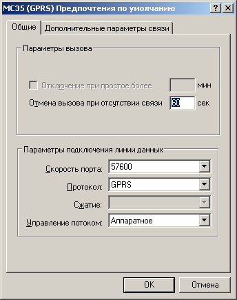
Скорость порта: 57600
Протокол: GPRS
Управление потоком: Аппаратное
Сохраните введенные настройки нажатием кнопки «ОК». Закройте окно «Телефон и модем», нажав кнопку «ОК». На этом установка и настройка модема завершена.
1.Запустите Панель управления: выберите команду «Панель управления» в меню «Пуск».
2.Откройте раздел «Сетевые подключения». Для этого в Панели управления дважды щёлкните мышью пункт «Сетевые подключения».
3.В окне «Сетевые подключения» дважды щёлкните мышью пункт «Мастер новых подключений».
4.Новое подключение всегда производится через «Мастер новых подключений». На первом экране Мастера нажмите кнопку «Далее >»
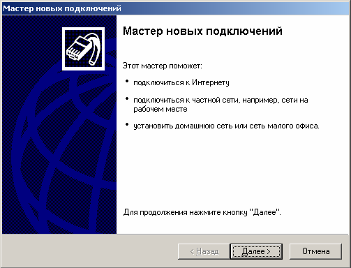
5.Выберите тип сетевого подключения. Щелкните мышью пункт «Подключить к Интернету» и нажмите «Далее >»
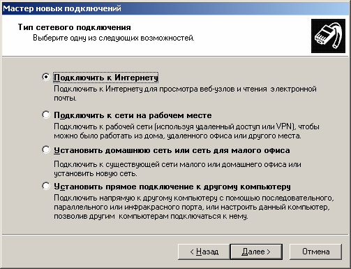
6.Выберите пункт «Установить подключение в ручную» и нажимаем кнопку «Далее»
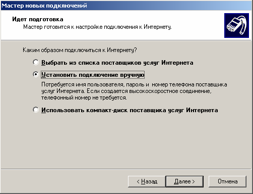
7.Укажите каким образом Вы подключаетесь к Интернет. Выберите пункт «Через обычный модем» и нажмите «Далее >»
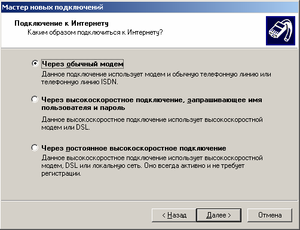
8.Укажите имя поставщика услуг. Внимание! Имя поставщика услуг следует указывать только по-английски. По окончании нажмите «Далее >»
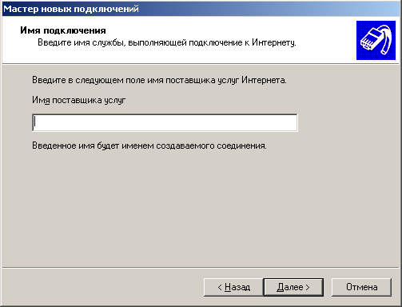
9.Укажите шаблон номер телефона для модемного подключения к вашему провайдеру. Как правило, номера дозвона провайдеров имеют следующий вид
*99***1#
Нажмите «Далее >»
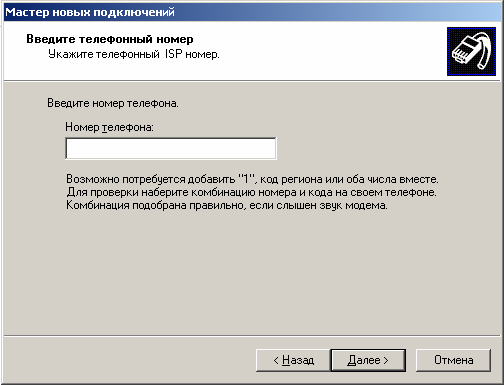
10.Укажите параметры учётной записи для Вашего провайдера:
11.Для подключения к Beeline:
Имя пользователя: internet
Пароль: internet
12.Для подключения к Tele2/Altel:
Имя пользователя: internet
Пароль: internet
13.Для подключения к Activ/Kcell:
Имя пользователя: internet
Пароль: internet
Внимание! Приведенные выше параметры учётной записи могут быть изменены – обязательно уточните их у оператора сотовой связи, к которому вы подключаетесь.
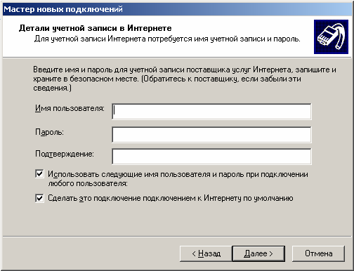
По окончании нажмите «Далее >»
14.Последний экран Мастера отображает сводные данные созданного Вами подключения. Работа Мастера новых подключений завершена: нажмите «Готово».
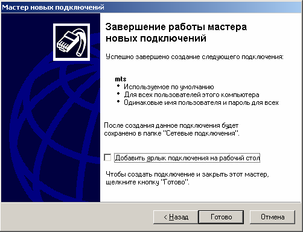
15.Сразу после завершения работы Мастера система предпримет попытку установить соединение с провайдером. После того как появится окно подключения, переходите к детальной настройке свойств созданного Вами подключения (см. раздел 3 настоящего документа).
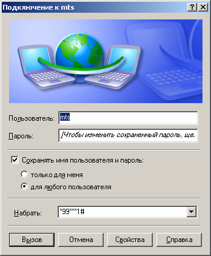
1.После запуска пробного подключения к Вашему провайдеру (см. предыдущий шаг, п.2.12) в окне «Подключение к <<имя провайдера>>» нажмите кнопку «Свойства».
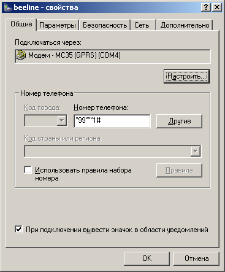
Примечание: панель свойств удалённого подключения к интернет можно открыть и другим способом. Запустите Панель управления, затем перейдите в раздел «Сетевые подключения». На панели «Сетевые подключения» щелкните правой кнопкой мыши на пиктограмме удалённого сетевого подключения. В открывшемся всплывающем меню выберите пункт «Свойства».
2.На вкладке «Общие» в строке «Подключаться через» выберите модем, который требуется настроить, и нажмите кнопку «Настроить». Система отобразит окно «Конфигурация модема».
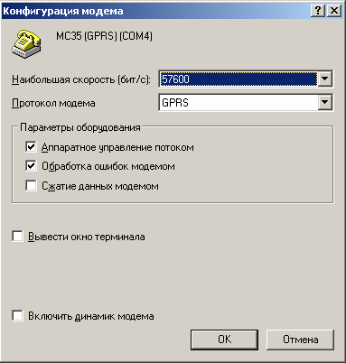
3.В окне «Конфигурация модема» задайте следующие параметры:
4.Установите следующие флажки:
5.Нажмите «ОК» для того, чтобы закрыть окно «Конфигурация модема»
6.Щелкните мышью вкладку «Параметры» и задайте параметры набора номера и параметры повторного звонка:
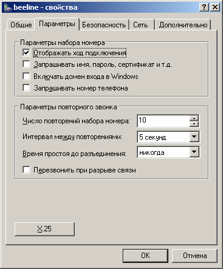
8.В секции «Компоненты, используемые этим подключением» выберите пункт «Internet Protocol (TCP/IP)» и нажмите «Свойства». Система откроет окно свойств TCP/IP
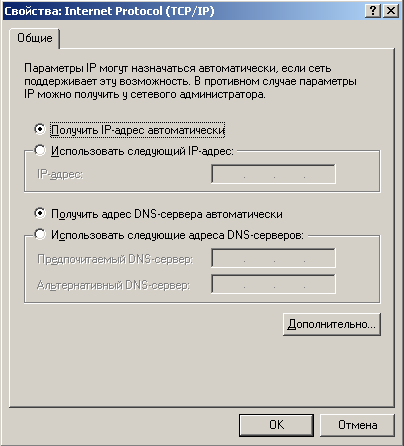
9.В окне свойств TCP/IP нажмите «Дополнительно». В открывшемся окне «Дополнительные параметры TCP/IP» снимите флажок «Использовать сжатие IP-заголовков».
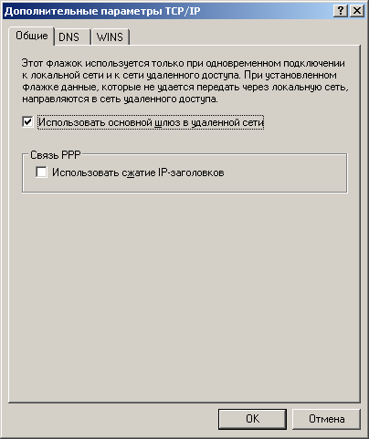
10.Нажмите кнопку «ОК» панели «Дополнительные параметры TCP/IP».
11.Нажмите кнопку «ОК» панели «Свойства: Internet Protocol (TCP/IP)».
12.Нажмите кнопку «ОК» панели «<<имя провайдера>> - свойства».
13.После это нажимаем кнопку «ОК» в окне «Дополнительные параметры TCP/IP», далее кнопку «ОК» в окне «Свойства: Internet Protocol (TCP/IP)», далее кнопку «ОК» в окне «название подключения – Свойства».
14.Настройка параметров удалённого подключения завершена.